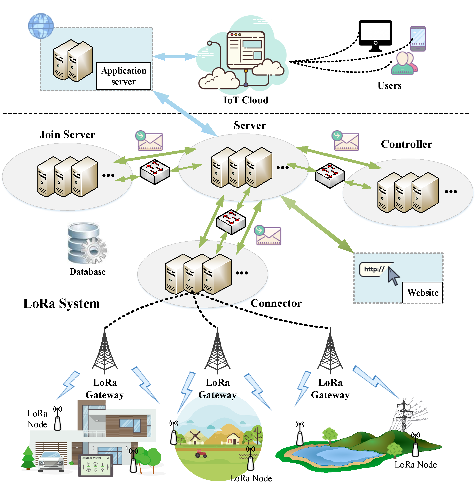

Overview
What is LoRa™ & LoRaWAN™
LoRa™
Long Range (LoRa™) is one of the most promising wireless data communication technologies designed for low-power Internet of things (IoT) devices to achieve long-range transmission. LoRa™ consists of two main parts, i.e., LoRa™ and LoRaWAN™. LoRa™ is the physical layer and defines a kind of wireless modulation over a license-free frequency band. This kind of spread spectrum modulation technique is improved from chirp spread spectrum (CSS) technology. It can increase the communication range significantly while keeping the same low-power characteristics as Frequency Shift Keying (FSK). LoRaWAN™ defines the upper layer of LoRa™ and is discussed below.
LoRaWAN™
The LoRaWAN™ specification is a Low Power Wide Area networking (LPWAN) protocol based on LoRa™ technology. This specification is released by LoRa Alliance™. It describes the communication and system architecture for LoRa networks. LoRaWAN network architecture is designed as a star-of-stars topology in which end-devices send messages to the central network server through the gateways.
What is X-LoRa System
FleXsible LoRa (X-LoRa) system project is designed for building LoRaWAN networks which is hosted on the GitHub platform. The system is used to manage and aggregate the gateways, the applications and the devices. It receives messages from gateways and send the data to the applications.
The project provides a ready-to-use solution for users including web-interface and HTTP APIs. For example, Application server manages application payloads and web management server offers a UI interface for users to access and modify their gateways, applications and devices. Furthermore, the HTTP APIs are designed so that the LoRa system may be integrated into other platforms.
A complete LoRa network is composed of several parts, i.e., LoRa device, LoRa gateway and LoRa system. The X-LoRa system is proposed to facilitate the implementation and management of private LoRa networks. X-LoRa consists of four modules, which are responsible for different tasks and services such as protocol processing and device activation. Application server is designed to customize the structure and encryption of various application payload. The web project makes it easy for administrators to manage LoRa devices and various applications.
The implementation details of X-LoRa system are described below, as well as the tutorials for deploying and using such a system.
Architecture
Our X-LoRa System consists of six main components:
- Connector
- Server
- Join Server
- Controller
- Application Server
- Web management server

Connector is the bridge between the LoRa gateway and Server, which provides the services for parsing and packaging the payload of Media Access Control (MAC) layer. Server is responsible for data management and service scheduling. Join Server is proposed to handle the activation requests of LoRa devices. Controller focuses on processing and managing MAC commands exchanged between LoRa server and LoRa devices in order to adjust LoRa™ transmission parameters. Application Server is responsible for the handling, encryption and decryption of application payloads. Web management server is designed as a user interface that allows for easy management of applications and devices via a web browser.
Features
- High Performance
X-LoRa system can reach a very high performance on concurrency and latency. The whole system is developed in Node.js which is expert in asynchronous I/O, making it fast to handle thousands of requests concurrently.
- Scalability
X-LoRa uses message queue to unite each component. Therefore, it can be easily scaled up by adding devices to the clusters to deal with growing size.
- Open Source
X-LoRa system is totally open source and hosted on Github under license GPL-3.0. Welcome to make contributions and feel free to use X-LoRa anywhere you like.
- Gateway Routing
X-LoRa server manages routing of downlink messages in order to ensure that the gateway which has the best channel quality with target device can be assigned to forward the messages.
- Adaptive Data Rate
An efficient ADR scheme is deployed in X-LoRa, which is proposed in LoRaWAN™ specification. The ADR scheme running on Controller is responsible for controlling the data rate and transmission power of LoRa devices, so that they can ensure the successful transmission of packets while reducing the energy consumption. Enabling ADR scheme can significantly improve spectrum utilization and the battery lifetime of LoRa devices. Of course, LoRa devices can choose whether to turn this mechanism on or not by the ADR flag bit of the uplink packet. In addition, the ADR scheme only applies to stationary LoRa devices because it may not be possible when the radio channel attenuation changes fast and constantly.
- Customizable
Each of the component of X-LoRa system can be customized as long as the format of messages are matched.
- Application Integration and APIs
The application data is published to the message queue on a certain topic. Therefore, external applications can be integrated to X-LoRa by subscribing the topic. Besides, X-LoRa provides a bunch of HTTP APIs to enable service integration.